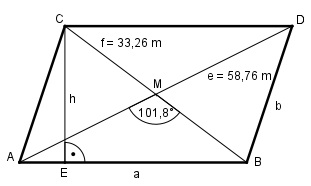

Aufgabe 151 Wie groß ist die Fläche A des Parallelogramms?

AM = e/2 BM = f/2 Im Dreieck ABM: Fall SWS: Cosinussatz: a2 = (e/2)2 + (f/2)2 - 2*(e/2)*(f/2)*cos 101,8° a2 = (58,76/2)2 + (33,26/2)2 - - 2 * (58,76/2) * (33,26/2) * (-0,2045) a2 = 29,382 + 16,632 + 2 * 29,38 * 16,63 * 0,2045 a2 = 1 339,6 |√ a = 36,6 m Im Dreieck BDM: Fall SWS: Winkel bei M = 180° - 101,8° = 78,2° Cosinussatz: b2 = (e/2)2 + (f/2)2 - 2*(e/2)*(f/2) * cos 78,2° b2 = (58,76/2)2 + (33,26/2)2 - - 2 * (58,76/2) * (33,26/2) * 0,2045 b2 = 29,382 + 16,632 - 2 * 29,38 * 16,63 * 0,2045 b2 = 939,9 |√ b = 30,7 m Im Dreieck ABC: Fall SSS: f2 = a2 + b2 + 2 * a * b * cos α |+2*a*b*cos α f2 + 2 * a * b * cos α = a2 + b2 | -f2 2 * a * b * cos α = a2 + b2 - f2 | :2 * a * b a2 + b2 - f2 cos α = -------------- = 2 * a * b 36,62 + 30,72 - 33,262 = ------------------------ = 0,5232 --> α = 58,5° 2 * 36,6 * 30,7 Im Dreieck AEC: h sin α = --- |*b b h = b * sin α = = 30,7 m * sin 58,5° = 30,7 m * 0,8526 = 26,2 m A = a * h = 36,6 m * 26,2 m = 958,9 m2